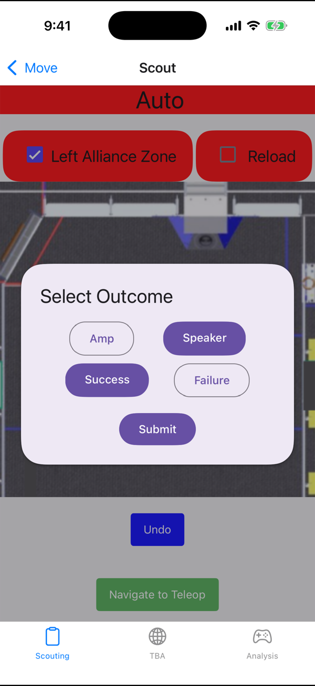
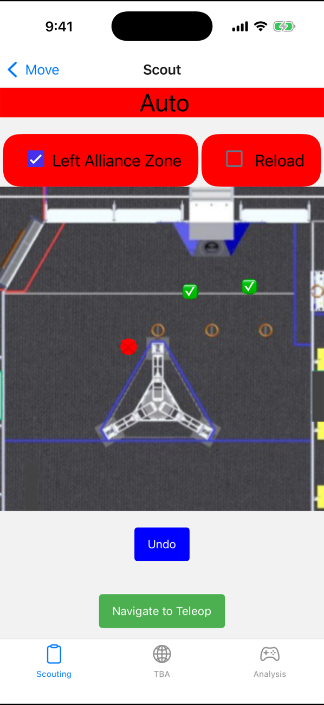

A gesture handler records the x/y of the tap on the 2024 field image.
Amp or Speaker, then Success or Failure. Undo removes the last shot.
Each page writes to AsyncStorage, so a closed app does not lose the match.